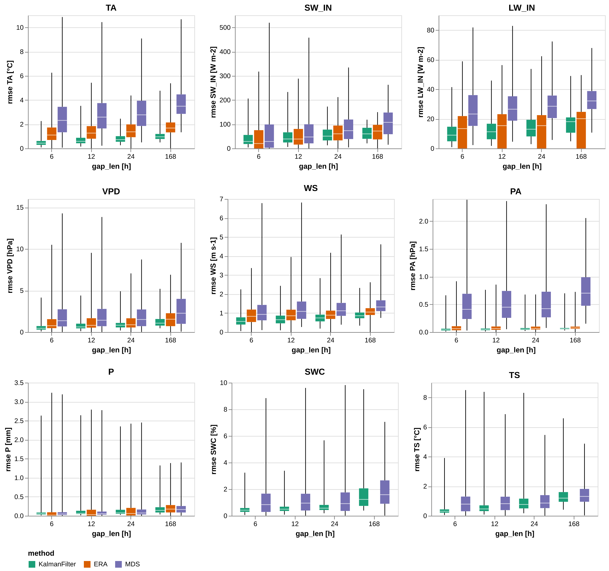
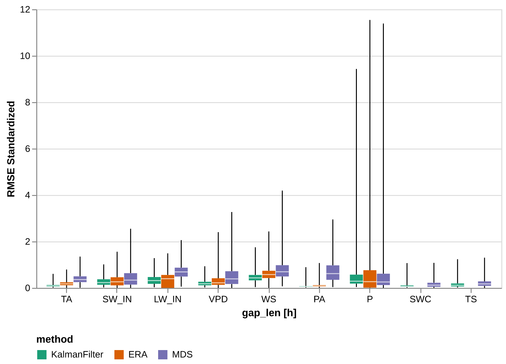
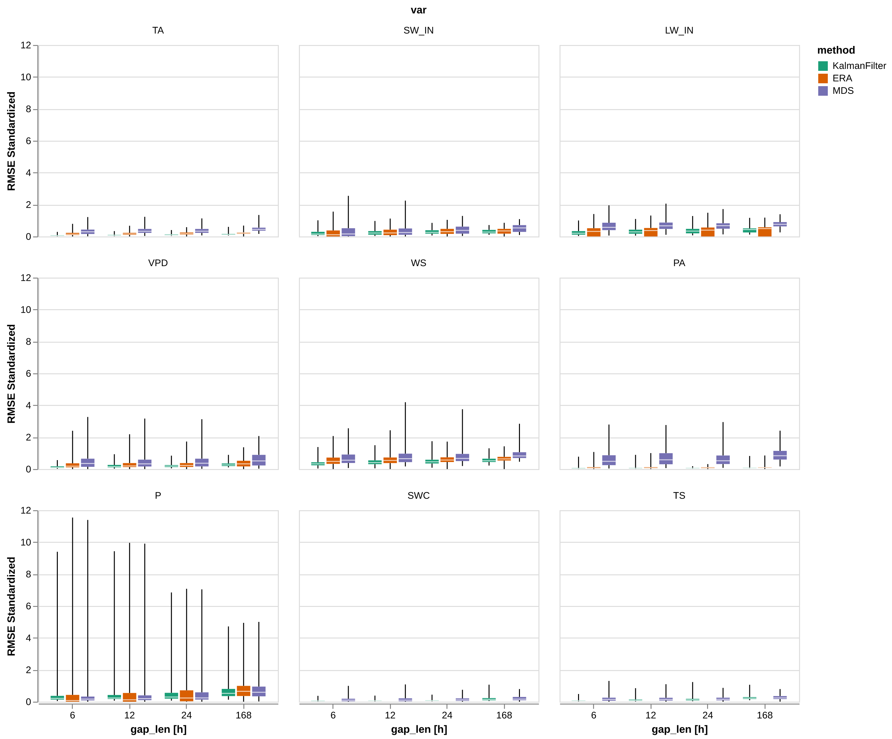
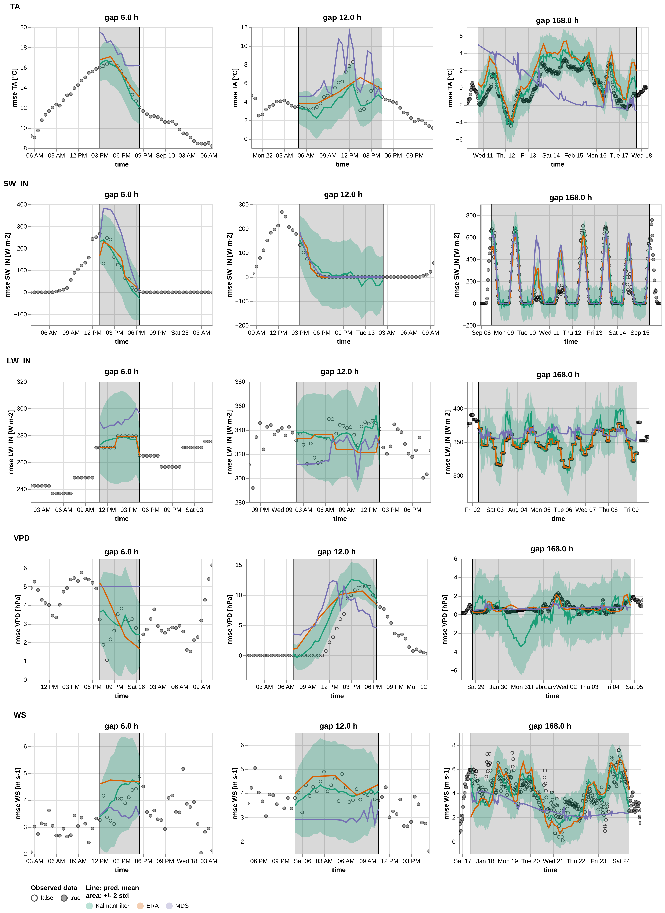

%load_ext autoreload
%autoreload 2Plotting for results
This notebook produces all results plots. It generates some gap in the data, fill with a method (filter, MDS …), compute metrics and then makes all relevant plots
import altair as altfrom meteo_imp.kalman.results import *
from meteo_imp.data import *
from meteo_imp.utils import *
import pandas as pd
import numpy as np
from pyprojroot import here
import torch
import seaborn as sns
import matplotlib.pyplot as plt
from IPython.display import SVG, Imageimport vl_convert as vlc
from pyprojroot import here
base_path_img = here("manuscript/Master Thesis - Meteorological time series imputation using Kalman filters - Simone Massaro/images/")
base_path_tbl = here("manuscript/Master Thesis - Meteorological time series imputation using Kalman filters - Simone Massaro/tables/")
def save_plot(plot, path):
png_data = vlc.vegalite_to_png(vl_spec=plot.to_json(), scale=3)
with open(base_path_img / (path + ".png"), "wb") as f:
f.write(png_data)
def show_plot(path): return Image(filename=base_path_img / (path + ".png"))reset_seed()
n_rep = 500hai = pd.read_parquet(hai_big_path).reindex(columns=var_type.categories)
hai_era = pd.read_parquet(hai_era_big_path)Comparison Imputation methods
Main plot
The gap is a only in the variable that is gap-filled
hai.columnsIndex(['TA', 'SW_IN', 'LW_IN', 'VPD', 'WS', 'PA', 'P', 'SWC', 'TS'], dtype='object')base_path = here("analysis/results/trained_14feb")def l_model(x): return torch.load(base_path / x)models_var = [
{'var': 'TA', 'model': l_model("TA_specialized_gap_12-336_v2.pickle.pickle")},
{'var': 'SW_IN', 'model': l_model("SW_IN_specialized_gap_12-336_v2.pickle.pickle")},
{'var': 'LW_IN', 'model': l_model("LW_IN_specialized_gap_12-336_v1.pickle")},
{'var': 'VPD', 'model': l_model("VPD_specialized_gap_12-336_v1.pickle")},
{'var': 'WS', 'model': l_model("WS_specialized_gap_12-336_v3.pickle")},
{'var': 'PA', 'model': l_model("PA_specialized_gap_12-336_v3.pickle")},
{'var': 'P', 'model': l_model("P_specialized_gap_12-336_v1.pickle")},
{'var': 'TS', 'model': l_model("TS_specialized_gap_12-336_v3.pickle")},
{'var': 'SWC', 'model': l_model("SWC_specialized_gap_12-336_v3_4.pickle")},
]
models_var = pd.DataFrame.from_records(models_var)@cache_disk(cache_dir / "the_results")
def get_the_results(n_rep=20):
comp_Av = ImpComparison(models = models_var, df = hai, control = hai_era, block_len = 446, time_series=False)
results_Av = comp_Av.compare(gap_len = [12,24, 48, 336], var=list(hai.columns), n_rep=n_rep)
return results_Av
results_Av = get_the_results(n_rep)from itertools import product
import altair as altalt.data_transformers.disable_max_rows() # it is safe to do so as the plots are rendered using vl-convert and then showed as imagesDataTransformerRegistry.enable('default')p = the_plot(results_Av)
save_plot(p, "the_plot")
show_plot("the_plot")
p = the_plot_stand(results_Av)
save_plot(p, "the_plot_stand")
show_plot("the_plot_stand")
p = the_plot_stand2(results_Av)
save_plot(p, "the_plot_stand2")
show_plot("the_plot_stand2")
p = the_plot_stand3(results_Av)
save_plot(p, "the_plot_stand3")
show_plot("the_plot_stand3")Table
t = the_table(results_Av)
the_table_latex(t, base_path_tbl / "the_table.tex", label="the_table",
caption="RMSE Comparison imputation methods. The best method for each gap length is highligthed in bold")
t| KalmanFilter | ERA | MDS | |||||
|---|---|---|---|---|---|---|---|
| RMSE | mean | std | mean | std | mean | std | |
| Variable | Gap [$h$] | ||||||
| TA | 6.0 | 0.489414 | 0.286708 | 1.346910 | 0.997843 | 2.712546 | 1.896914 |
| 12.0 | 0.717705 | 0.450045 | 1.471695 | 0.900611 | 2.942435 | 1.748131 | |
| 24.0 | 0.846503 | 0.424666 | 1.529614 | 0.800256 | 3.012819 | 1.611311 | |
| 168.0 | 1.074202 | 0.465658 | 1.754334 | 0.643160 | 3.780087 | 1.315472 | |
| SW_IN | 6.0 | 44.406835 | 41.185820 | 49.333113 | 66.241975 | 63.536627 | 85.401585 |
| 12.0 | 49.386211 | 34.587600 | 54.207691 | 49.769296 | 69.427115 | 68.936352 | |
| 24.0 | 57.888189 | 29.905625 | 65.950367 | 40.930505 | 86.770917 | 59.603564 | |
| 168.0 | 62.929765 | 25.382879 | 70.224393 | 34.883199 | 107.384249 | 53.606111 | |
| LW_IN | 6.0 | 10.933181 | 8.117911 | 13.804628 | 12.987987 | 26.680077 | 15.022366 |
| 12.0 | 12.976946 | 8.420187 | 14.766929 | 12.584725 | 28.085478 | 13.457335 | |
| 24.0 | 14.311389 | 8.301348 | 14.093052 | 12.227900 | 29.614461 | 12.416763 | |
| 168.0 | 16.982041 | 6.724037 | 16.365697 | 11.129569 | 32.954558 | 8.833972 | |
| VPD | 6.0 | 0.579836 | 0.454156 | 1.296787 | 1.547397 | 2.083592 | 2.149288 |
| 12.0 | 0.830825 | 0.620231 | 1.265213 | 1.288794 | 2.136626 | 2.095549 | |
| 24.0 | 0.957941 | 0.616140 | 1.247527 | 1.032319 | 1.912472 | 1.605013 | |
| 168.0 | 1.282954 | 0.735500 | 1.662069 | 1.127314 | 2.661345 | 1.965431 | |
| WS | 6.0 | 0.604378 | 0.309739 | 0.912428 | 0.508295 | 1.136367 | 0.783146 |
| 12.0 | 0.701851 | 0.335770 | 0.956550 | 0.524247 | 1.261203 | 0.796744 | |
| 24.0 | 0.786750 | 0.333186 | 0.949427 | 0.446912 | 1.275665 | 0.608630 | |
| 168.0 | 0.946239 | 0.337541 | 1.088887 | 0.348541 | 1.494891 | 0.615371 | |
| PA | 6.0 | 0.048172 | 0.039004 | 0.074856 | 0.061726 | 0.530665 | 0.441476 |
| 12.0 | 0.054868 | 0.044319 | 0.077328 | 0.058476 | 0.563603 | 0.427426 | |
| 24.0 | 0.061694 | 0.040415 | 0.079021 | 0.051491 | 0.556899 | 0.404451 | |
| 168.0 | 0.067441 | 0.047825 | 0.083628 | 0.053654 | 0.773143 | 0.384029 | |
| P | 6.0 | 0.111547 | 0.253684 | 0.113173 | 0.315504 | 0.117710 | 0.305539 |
| 12.0 | 0.134660 | 0.248484 | 0.138729 | 0.297227 | 0.130442 | 0.281377 | |
| 24.0 | 0.156399 | 0.242352 | 0.165750 | 0.288432 | 0.158641 | 0.265257 | |
| 168.0 | 0.195263 | 0.175225 | 0.222682 | 0.201782 | 0.214975 | 0.197499 | |
| SWC | 6.0 | 0.509564 | 0.363343 | NaN | NaN | 1.313730 | 1.556829 |
| 12.0 | 0.610184 | 0.439400 | NaN | NaN | 1.278001 | 1.323011 | |
| 24.0 | 0.755764 | 0.582507 | NaN | NaN | 1.355740 | 1.472185 | |
| 168.0 | 1.592585 | 1.258741 | NaN | NaN | 1.947605 | 1.488284 | |
| TS | 6.0 | 0.372636 | 0.333516 | NaN | NaN | 0.954469 | 0.889126 |
| 12.0 | 0.611555 | 0.645607 | NaN | NaN | 1.002555 | 0.876784 | |
| 24.0 | 0.916664 | 0.733149 | NaN | NaN | 1.078373 | 0.856964 | |
| 168.0 | 1.401425 | 0.800632 | NaN | NaN | 1.440008 | 0.764040 | |
t = the_table(results_Av, 'rmse_stand')
the_table_latex(t, base_path_tbl / "the_table_stand.tex", stand = True, label="the_table_stand",
caption = "Comparison of imputation methods using Standardized RMSE. The best method for each gap length is highligthed in bold")
t| KalmanFilter | ERA | MDS | |||||
|---|---|---|---|---|---|---|---|
| RMSE | mean | std | mean | std | mean | std | |
| Variable | Gap [$h$] | ||||||
| TA | 6.0 | 0.061759 | 0.036179 | 0.169965 | 0.125917 | 0.342294 | 0.239370 |
| 12.0 | 0.090567 | 0.056791 | 0.185712 | 0.113647 | 0.371303 | 0.220595 | |
| 24.0 | 0.106819 | 0.053588 | 0.193021 | 0.100984 | 0.380185 | 0.203330 | |
| 168.0 | 0.135553 | 0.058761 | 0.221378 | 0.081160 | 0.477006 | 0.165998 | |
| SW_IN | 6.0 | 0.217678 | 0.201889 | 0.241826 | 0.324711 | 0.311450 | 0.418630 |
| 12.0 | 0.242086 | 0.169545 | 0.265721 | 0.243964 | 0.340325 | 0.337919 | |
| 24.0 | 0.283762 | 0.146594 | 0.323282 | 0.200637 | 0.425342 | 0.292171 | |
| 168.0 | 0.308475 | 0.124424 | 0.344233 | 0.170994 | 0.526387 | 0.262772 | |
| LW_IN | 6.0 | 0.260588 | 0.193487 | 0.329028 | 0.309564 | 0.635910 | 0.358053 |
| 12.0 | 0.309301 | 0.200692 | 0.351964 | 0.299952 | 0.669407 | 0.320751 | |
| 24.0 | 0.341107 | 0.197860 | 0.335903 | 0.291448 | 0.705850 | 0.295949 | |
| 168.0 | 0.404761 | 0.160265 | 0.390071 | 0.265269 | 0.785460 | 0.210555 | |
| VPD | 6.0 | 0.132734 | 0.103964 | 0.296855 | 0.354224 | 0.476967 | 0.492006 |
| 12.0 | 0.190189 | 0.141981 | 0.289627 | 0.295025 | 0.489108 | 0.479704 | |
| 24.0 | 0.219288 | 0.141044 | 0.285579 | 0.236314 | 0.437795 | 0.367413 | |
| 168.0 | 0.293689 | 0.168368 | 0.380474 | 0.258060 | 0.609224 | 0.449918 | |
| WS | 6.0 | 0.371828 | 0.190559 | 0.561347 | 0.312715 | 0.699120 | 0.481810 |
| 12.0 | 0.431795 | 0.206574 | 0.588492 | 0.322529 | 0.775922 | 0.490176 | |
| 24.0 | 0.484027 | 0.204984 | 0.584110 | 0.274951 | 0.784819 | 0.374443 | |
| 168.0 | 0.582148 | 0.207663 | 0.669909 | 0.214431 | 0.919692 | 0.378591 | |
| PA | 6.0 | 0.056331 | 0.045611 | 0.087534 | 0.072180 | 0.620545 | 0.516250 |
| 12.0 | 0.064161 | 0.051826 | 0.090425 | 0.068381 | 0.659061 | 0.499820 | |
| 24.0 | 0.072144 | 0.047260 | 0.092405 | 0.060212 | 0.651223 | 0.472953 | |
| 168.0 | 0.078864 | 0.055925 | 0.097793 | 0.062741 | 0.904092 | 0.449073 | |
| P | 6.0 | 0.397991 | 0.905123 | 0.403790 | 1.125691 | 0.419979 | 1.090136 |
| 12.0 | 0.480457 | 0.886571 | 0.494974 | 1.060481 | 0.465404 | 1.003928 | |
| 24.0 | 0.558019 | 0.864691 | 0.591382 | 1.029100 | 0.566018 | 0.946414 | |
| 168.0 | 0.696682 | 0.625189 | 0.794512 | 0.719941 | 0.767011 | 0.704660 | |
| SWC | 6.0 | 0.057170 | 0.040765 | NaN | NaN | 0.147393 | 0.174667 |
| 12.0 | 0.068459 | 0.049298 | NaN | NaN | 0.143384 | 0.148434 | |
| 24.0 | 0.084792 | 0.065354 | NaN | NaN | 0.152106 | 0.165171 | |
| 168.0 | 0.178679 | 0.141223 | NaN | NaN | 0.218510 | 0.166977 | |
| TS | 6.0 | 0.065853 | 0.058939 | NaN | NaN | 0.168674 | 0.157127 |
| 12.0 | 0.108074 | 0.114092 | NaN | NaN | 0.177172 | 0.154946 | |
| 24.0 | 0.161994 | 0.129563 | NaN | NaN | 0.190571 | 0.151443 | |
| 168.0 | 0.247661 | 0.141488 | NaN | NaN | 0.254479 | 0.135022 | |
Timeseries
@cache_disk(cache_dir / "the_results_ts")
def get_the_results_ts():
comp_Av = ImpComparison(models = models_var, df = hai, control = hai_era, block_len = 446, time_series=True, rmse=False)
results_Av = comp_Av.compare(gap_len = [12,24, 336], var=list(hai.columns), n_rep=4)
return results_Av
# results_ts = get_the_results_ts()# ts = plot_timeseries(results_ts.query("var in ['TA', 'SW_IN', 'LW_IN', 'VPD', 'WS']"), idx_rep=0)
# save_plot(ts, "timeseries_1")
show_plot("timeseries_1")
# %time ts = plot_timeseries(results_ts.query("var in ['PA', 'P', 'TS', 'SWC']"), idx_rep=0)
# %time save_plot(ts, "timeseries_2")
show_plot("timeseries_2")from tqdm.auto import tqdmresults_ts.idx_rep.unique()# @cache_disk(cache_dir / "ts_plot")
def plot_additional_ts():
for idx in tqdm(results_ts.idx_rep.unique()):
if idx == 0: continue # skip first plot as is done above
ts1 = plot_timeseries(results_ts.query("var in ['TA', 'SW_IN', 'LW_IN', 'VPD', 'WS']"), idx_rep=idx)
save_plot(ts1, f"timeseries_1_{idx}")
ts2 = plot_timeseries(results_ts.query("var in ['PA', 'P', 'TS', 'SWC']"), idx_rep=idx)
save_plot(ts2, f"timeseries_2_{idx}") # plot_additional_ts()Kalman Filter analysis
Gap len
@cache_disk("gap_len")
def get_g_len(n_rep=n_rep):
return KalmanImpComparison(models_var, hai, hai_era, block_len=48*7+100).compare(gap_len = [2,6,12,24,48,48*2, 48*3, 48*7], var=list(hai.columns), n_rep=n_rep)gap_len = get_g_len(n_rep)p = plot_gap_len(gap_len, hai, hai_era)
save_plot(p, "gap_len")
pt = table_gap_len(gap_len)
table_gap_len_latex(t, base_path_tbl / "gap_len.tex", label="gap_len",
caption="RMSE Comparison Kalman filter for different gap lengths")
t| 1 | 3 | 6 | 12 | 24 | 48 | 72 | 168 | ||
|---|---|---|---|---|---|---|---|---|---|
| Variable | RMSE | ||||||||
| TA | mean | 0.249874 | 0.369584 | 0.544200 | 0.721894 | 0.911514 | 0.996244 | 1.033084 | 1.062626 |
| SW_IN | mean | 27.218983 | 39.195194 | 46.166472 | 50.616872 | 57.511795 | 57.831439 | 59.806769 | 60.254291 |
| LW_IN | mean | 5.760089 | 8.424112 | 12.038032 | 14.447153 | 16.137752 | 16.569009 | 16.380740 | 17.414271 |
| VPD | mean | 0.283951 | 0.430531 | 0.615616 | 0.826526 | 1.098688 | 1.148027 | 1.219952 | 1.236631 |
| WS | mean | 0.349414 | 0.481933 | 0.589038 | 0.705312 | 0.785513 | 0.842590 | 0.919232 | 0.921488 |
| PA | mean | 0.023761 | 0.035799 | 0.047033 | 0.054201 | 0.060738 | 0.069416 | 0.070363 | 0.068169 |
| P | mean | 0.061754 | 0.086840 | 0.111877 | 0.145961 | 0.171795 | 0.163256 | 0.169645 | 0.187402 |
| SWC | mean | 0.250153 | 0.388866 | 0.482214 | 0.585416 | 0.718911 | 0.930457 | 1.038485 | 1.533061 |
| TS | mean | 0.214781 | 0.291131 | 0.394747 | 0.617634 | 0.899105 | 1.084576 | 1.238317 | 1.458591 |
# with open(base_path_tbl / "gap_len.tex") as f:
# print(f.readlines())from meteo_imp.kalman.results import _get_era_rmse, _plot_gap_lendata = prep_df(agg_gap_len(gap_len))
data = pd.merge(data, _get_era_rmse(hai, hai_era), on='var', how='left')
data = data[data.method == 'KalmanFilter']
data = data.astype({'gap_len': float})datadata.era_rmse = 3data.query("var == 'SWC'")_plot_gap_len(data.query("var == 'SWC'"), "")pControl
models_nc = pd.DataFrame({'model': [ l_model("1_gap_varying_336_no_control_v1.pickle"), l_model("1_gap_varying_12-336_v1.pickle")],
'type': [ 'No Control', 'Use Control' ]}) @cache_disk("use_control")
def get_control(n_rep=n_rep):
kcomp_control = KalmanImpComparison(models_nc, hai, hai_era, block_len=100+48*7)
k_results_control = kcomp_control.compare(n_rep =n_rep, gap_len = [12, 24, 48, 48*7], var = list(hai.columns))
return k_results_controlk_results_control = get_control(n_rep)k_results_controlp = plot_compare(k_results_control, 'type', scale_domain=["Use Control", "No Control"])
save_plot(p, "use_control")
pfrom functools import partialt = table_compare(k_results_control, 'type')
table_compare_latex(t, base_path_tbl / "control.tex", label="control",
caption="Comparison between generic model with control variable (Use Control) and generic model without control variable (No Control). 50 samples for each variable and each gap length. The best result for each for each gap length is highligthed in bold")
tGap in Other variables
models_gap_all = models_var.copy()models_gap_all.model = l_model("All_gap_all_30_v1.pickle")
models_gap_all['Gap'] = 'All variables'
models_gap_all['gap_single_var'] = Falsemodels_gap_all = pd.concat([models_gap_all, models_var.assign(Gap = 'Only one var', gap_single_var = True)])@cache_disk("multi_gap")
def get_multi_gap(n_rep):
kcomp_single = KalmanImpComparison(models_gap_all, hai, hai_era, block_len=120)
return kcomp_single.compare(n_rep =n_rep, gap_len = [6, 12, 24, 30], var = list(hai.columns))k_results_single = get_multi_gap(n_rep)p = plot_compare(k_results_single, "Gap", scale_domain=["Only one var", "All variables"])
save_plot(p, "gap_single_var")
pt = table_compare(k_results_single, 'Gap')
table_compare_latex(t, base_path_tbl / "gap_single_var.tex")
tGeneric vs Specialized
models_generic = models_var.copy()models_generic.model = l_model("1_gap_varying_12-336_v1.pickle")
models_generic['type'] = 'Generic'models_genericmodels_var['type'] = 'Finetuned one var'models_gen_vs_spec = pd.concat([models_generic, models_var])models_gen_vs_spec@cache_disk("generic")
def get_generic(n_rep=n_rep):
comp_generic = KalmanImpComparison(models_gen_vs_spec, hai, hai_era, block_len=100+48*7)
return comp_generic.compare(n_rep =n_rep, gap_len = [12, 24, 48, 48*7], var = list(hai.columns))
k_results_generic = get_generic(n_rep)p = plot_compare(k_results_generic, 'type', scale_domain=["Finetuned one var", "Generic"])
save_plot(p, "generic")
pt = table_compare(k_results_generic, 'type')
table_compare_latex(t, base_path_tbl / "generic.tex")
tFluxnet
import polars as pl
from fastai.vision.data import get_gridCorrelation
import matplotlib.pyplot as pltimport statsmodels.api as smdef auto_corr_df(data, nlags=48):
autocorr = {}
for col in data.columns:
autocorr[col] = sm.tsa.acf(data[col], nlags=nlags)
return pd.DataFrame(autocorr)auto_corr = auto_corr_df(hai).T[[1,3,6,12,24,48]]
auto_corr.columns = auto_corr.columns /2axes = get_grid(2,1,2, figsize=(15,8))
sns.heatmap(hai.corr(), annot=True, vmin=-1, vmax=1, center=0,
cmap=sns.diverging_palette(20, 220, n=200), ax=axes[0], square=True, cbar=False)
sns.heatmap(auto_corr, annot=True, vmin=-1, vmax=1, center=0,
cmap=sns.diverging_palette(20, 220, n=200), square=True, ax=axes[1])
axes[1].set(ylabel="Variable", xlabel="Shift [h]", title="Temporal Autocorrelation")
axes[0].set(xlabel="Variable", ylabel="Variable", title="Correlation");
plt.tight_layout()
plt.savefig(base_path_img / "correlation.png")Gap distribution
out_dir = here("../fluxnet/gap_stat")site_info = pl.read_parquet(out_dir / "../site_info.parquet").select([
pl.col("start").cast(pl.Utf8).str.strptime(pl.Datetime, "%Y%m%d%H%M"),
pl.col("end").cast(pl.Utf8).str.strptime(pl.Datetime, "%Y%m%d%H%M"),
pl.col("site").cast(pl.Categorical).sort()
])def duration_n_obs(duration):
"converts a duration into a n of fluxnet observations"
return abs(int(duration.total_seconds() / (30 * 60)))files = out_dir.ls()
files.sort() # need to sort to match the site_info
sites = []
for i, path in enumerate(files):
sites.append(pl.scan_parquet(path).with_columns([
pl.lit(site_info[i, "site"]).alias("site"),
pl.lit(duration_n_obs(site_info[i, "start"] - site_info[i, "end"])).alias("total_obs"),
pl.col("TIMESTAMP_END").cast(pl.Utf8).str.strptime(pl.Datetime, "%Y%m%d%H%M").alias("end"),
]).drop("TIMESTAMP_END"))
gap_stat = pl.concat(sites)def plot_var_dist(var, small=False, ax=None):
if ax is None: ax = get_grid(1)[0]
ta_gaps = gap_stat.filter(
(pl.col("variable") == var)
).filter(
pl.col("gap_len") < 200 if small else True
).with_column(pl.col("gap_len") / (24 *2 * 7)).collect().to_pandas().hist("gap_len", bins=50, ax=ax)
ax.set_title(f"{var} - { 'gaps < 200' if small else 'all gaps'}")
if not small: ax.set_yscale('log')
ax.set_xlabel("gap length (weeks)")
ax.set_ylabel(f"{'Log' if not small else ''} n gaps")
# plt.xscale('log') plot_var_dist('TA_F_QC')color_map = dict(zip(scale_meteo.domain, list(sns.color_palette('Set2', n_colors=len(hai.columns)).as_hex())))qc_map = {
'TA': 'TA_F_QC',
'SW_IN': 'SW_IN_F_QC',
'LW_IN': 'LW_IN_F_QC',
'VPD': 'VPD_F_QC',
'WS': 'WS_F_QC',
'PA': 'PA_F_QC',
'P': 'P_F_QC',
'TS': 'TS_F_MDS_1_QC',
'SWC': 'SWC_F_MDS_1_QC',
}def pl_in(col, values):
expr = False
for val in values:
expr |= pl.col(col) == val
return exprgap_stat.filter(pl_in('variable', qc_map.values())
).with_columns([
pl.when(pl.col("gap_len") < 48*7).then(True).otherwise(False).alias("short"),
pl.count().alias("total"),
pl.count().alias("total len"),
]).groupby("short").agg([
(pl.col("gap_len").count() / pl.col("total")).alias("frac_num"),
(pl.col("gap_len").sum() / pl.col("total len")).alias("frac_len")
]).collect()def plot_var_dist_small(var, ax=None, small=True):
if ax is None: ax = get_grid(1)[0]
color = color_map[var]
var_qc = qc_map[var]
ta_gaps = gap_stat.filter(
(pl.col("variable") == var_qc)
).filter(
pl.col("gap_len") < (24 * 2 *7) if small else True
).with_column(pl.col("gap_len") / (2 if small else 48 * 7)
).collect().to_pandas().hist("gap_len", bins=50, ax=ax, edgecolor="white", color=color)
ax.set_title(f"{var} - { 'gap length < 1 week' if small else 'all gaps'}")
ax.set_xlabel(f"gap length ({ 'hour' if small else 'week'})")
ax.set_ylabel(f"Log n gaps")
ax.set_yscale('log') vars = gap_stat.select(pl.col("variable").unique()).collect()vars.filter(pl.col("variable").str.contains("TA"))for ax, var in zip(get_grid(9,3,3, figsize=(15,12), sharey=False), list(var_type.categories)):
plot_var_dist_small(var, ax=ax)
plt.savefig(base_path_img / "gap_len_dist_small.png")for ax, var in zip(get_grid(9,3,3, figsize=(15,12), sharey=False), list(var_type.categories)):
plot_var_dist_small(var, ax=ax, small=False)
plt.savefig(base_path_img / "gap_len_dist.png")methods colors
print(sns.color_palette('Dark2').as_hex())